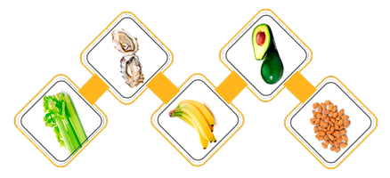
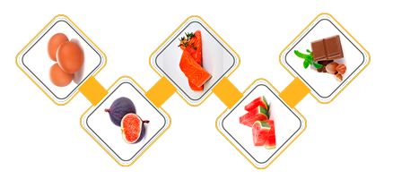

Alimentos que aumentan el deseo
¿Tu vida sexual está en profundo descenso y no sabes qué hacer? ¿Sabías que este problema puede mejorar con una adecuada alimentación? Toma nota y ten en cuenta lo siguiente para agregar en la lista del próximo mercado.
Si bien es cierto que con el paso del tiempo la libido tiende a disminuir debido al desequilibrio hormonal que experimenta el cuerpo, vinculado con una menor producción de hormonas, lo cual es imposible evitar, consumir ciertos alimentos puede compensar esta inestabilidad.
Esto opinan nuestros lectores en redes sociales, pero, ¿Cuáles son las posturas recomendadas por nuestros amigos del programa Switch para satisfacer a las mujeres?
- 
Apio: Este vegetal contiene androsterona, una hormona que se libera a través de la transpiración masculina y causa atracción en las mujeres.
Ostras: Son muy conocidas como alimento afrodisíaco, ya que son ricas en zinc, lo que aumenta la producción de esperma y testosterona, además de mejorar la circulación hacia los genitales.
Bananas: La bromelina, presente en esta fruta, ayuda a aumentar el deseo sexual y frenar la impotencia. Además tiene
potasio y vitamina B, que incrementarán tu energía notablemente.
Aguacate: Contiene vitamina B6 que permite aumentar la producción de esperma. Además, contiene ácido fólico, que te ayuda a metabolizar las proteínas, brindándote más energía.
Almendras: Los ácidos grasos que contienen los frutos secos en general, permiten que se desarrollen sanamente las hormonas. También poseen altos niveles de magnesio, lo que puede ayudar a la relajación y a poner la mente en un estado de calma y puro disfrute.
- 
Huevos: Son ricos en vitaminas B5, B6 y potasio, que ayudan a reducir el estrés y conseguir un equilibrio hormonal,
necesarios para una correcta vida sexual.
Higos: El poder de esta fruta reside en sus aminoácidos, que permiten mejorar el rendimiento y resistencia sexual, al tiempo que aumentan notablemente la libido.
Pescados: Este alimento se ha relacionado con el aumento del deseo sexual, en especial, la trucha, las sardinas, el salmón y el atún blanco, que contienen ácido graso omega-3. También puedes tomar suplemento de aceite de pescado.
Sandía: Esta fruta contiene compuestos químicos que simulan en tu cuerpo el efecto del viagra.
Cacao: Eleva los niveles de dopamina, serotonina y oxitocina en el cerebro, los tres químicos más importantes en la producción de diversas sensaciones, como el hacernos sentir sexis.
Ahora que sabes cómo alimentarte, inclúyelos en tu dieta diaria para que experimentes por ti mismo el aumento de tu libido. Recuerda que todo lo que ingerimos es la gasolina para el funcionamiento de todo el cuerpo.